Race conditions
Race conditions are a common type of vulnerability closely related to business logic flaws. They occur when websites process requests concurrently without adequate safeguards. This can lead to multiple distinct threads interacting with the same data at the same time, resulting in a "collision" that causes unintended behavior in the application. A race condition attack uses carefully timed requests to cause intentional collisions and exploit this unintended behavior for malicious purposes.
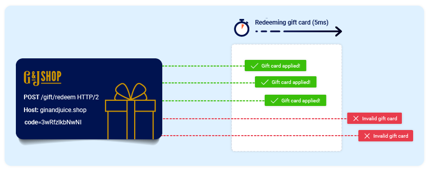
The period of time during which a collision is possible is known as the "race window". This could be the fraction of a second between two interactions with the database, for example.
Like other logic flaws, the impact of a race condition is heavily dependent on the application and the specific functionality in which it occurs.
In this section, you'll learn how to identify and exploit different types of race condition. We'll teach you how Burp Suite's built-in tooling can help you to overcome the challenges of performing classic attacks, plus a tried and tested methodology that enables you to detect novel classes of race condition in hidden multi-step processes. These go far beyond the limit overruns that you may be familiar with already.
PortSwigger Research
As usual, we've also provided a number of deliberately vulnerable labs that you can use to practice what you've learned safely against realistic targets. Many of these are based on original PortSwigger research, first presented at Black Hat USA 2023.
For more details, check out the accompanying whitepaper: Smashing the state machine: The true potential of web race conditions
Limit overrun race conditions
The most well-known type of race condition enables you to exceed some kind of limit imposed by the business logic of the application.
For example, consider an online store that lets you enter a promotional code during checkout to get a one-time discount on your order. To apply this discount, the application may perform the following high-level steps:
- Check that you haven't already used this code.
- Apply the discount to the order total.
- Update the record in the database to reflect the fact that you've now used this code.
If you later attempt to reuse this code, the initial checks performed at the start of the process should prevent you from doing this:
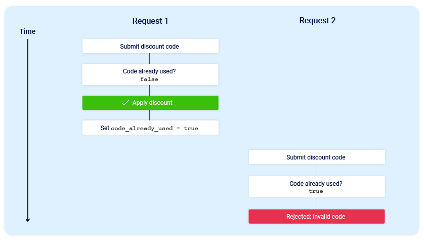
Now consider what would happen if a user who has never applied this discount code before tried to apply it twice at almost exactly the same time:
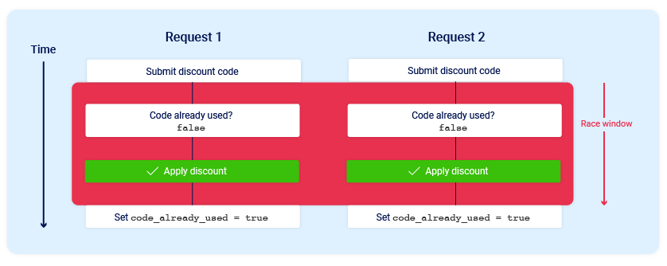
As you can see, the application transitions through a temporary sub-state; that is, a state that it enters and then exits again before request processing is complete. In this case, the sub-state begins when the server starts processing the first request, and ends when it updates the database to indicate that you've already used this code. This introduces a small race window during which you can repeatedly claim the discount as many times as you like.
There are many variations of this kind of attack, including:
- Redeeming a gift card multiple times
- Rating a product multiple times
- Withdrawing or transferring cash in excess of your account balance
- Reusing a single CAPTCHA solution
- Bypassing an anti-brute-force rate limit
Limit overruns are a subtype of so-called "time-of-check to time-of-use" (TOCTOU) flaws. Later in this topic, we'll look at some examples of race condition vulnerabilities that don't fall into either of these categories.
Detecting and exploiting limit overrun race conditions with Burp Repeater
The process of detecting and exploiting limit overrun race conditions is relatively simple. In high-level terms, all you need to do is:
- Identify a single-use or rate-limited endpoint that has some kind of security impact or other useful purpose.
- Issue multiple requests to this endpoint in quick succession to see if you can overrun this limit.
The primary challenge is timing the requests so that at least two race windows line up, causing a collision. This window is often just milliseconds and can be even shorter.
Even if you send all of the requests at exactly the same time, in practice there are various uncontrollable and unpredictable external factors that affect when the server processes each request and in which order.
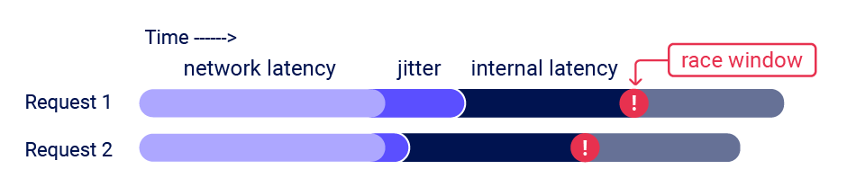
Burp Suite 2023.9 adds powerful new capabilities to Burp Repeater that enable you to easily send a group of parallel requests in a way that greatly reduces the impact of one of these factors, namely network jitter. Burp automatically adjusts the technique it uses to suit the HTTP version supported by the server:
- For HTTP/1, it uses the classic last-byte synchronization technique.
- For HTTP/2, it uses the single-packet attack technique, first demonstrated by PortSwigger Research at Black Hat USA 2023.
The single-packet attack enables you to completely neutralize interference from network jitter by using a single TCP packet to complete 20-30 requests simultaneously.
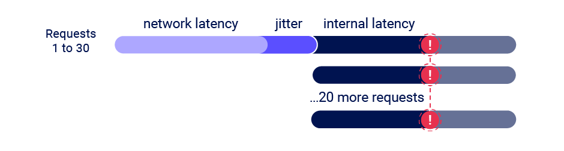
Although you can often use just two requests to trigger an exploit, sending a large number of requests like this helps to mitigate internal latency, also known as server-side jitter. This is especially useful during the initial discovery phase. We'll cover this methodology in more detail.
Read more
- For details on how to use the new features of Burp Repeater to send multiple requests in parallel, see Sending requests in parallel.
- For a technical insight into the underlying mechanics of the single-packet attack, and a more detailed look at the methodology, check out the accompanying whitepaper: Smashing the state machine: The true potential of web race conditions
Detecting and exploiting limit overrun race conditions with Turbo Intruder
In addition to providing native support for the single-packet attack in Burp Repeater, we've also enhanced the Turbo Intruder extension to support this technique. You can download the latest version from the BApp Store.
Turbo Intruder requires some proficiency in Python, but is suited to more complex attacks, such as ones that require multiple retries, staggered request timing, or an extremely large number of requests.
To use the single-packet attack in Turbo Intruder:
- Ensure that the target supports HTTP/2. The single-packet attack is incompatible with HTTP/1.
- Set the
engine=Engine.BURP2andconcurrentConnections=1configuration options for the request engine. - When queueing your requests, group them by assigning them to a named gate using the
gateargument for theengine.queue()method. - To send all of the requests in a given group, open the respective gate with the
engine.openGate()method.
def queueRequests(target, wordlists):
engine = RequestEngine(endpoint=target.endpoint,
concurrentConnections=1,
engine=Engine.BURP2
)
# queue 20 requests in gate '1'
for i in range(20):
engine.queue(target.req, gate='1')
# send all requests in gate '1' in parallel
engine.openGate('1')
For more details, see the race-single-packet-attack.py template provided in Turbo Intruder's default examples directory.
Hidden multi-step sequences
In practice, a single request may initiate an entire multi-step sequence behind the scenes, transitioning the application through multiple hidden states that it enters and then exits again before request processing is complete. We'll refer to these as "sub-states".
If you can identify one or more HTTP requests that cause an interaction with the same data, you can potentially abuse these sub-states to expose time-sensitive variations of the kinds of logic flaws that are common in multi-step workflows. This enables race condition exploits that go far beyond limit overruns.
For example, you may be familiar with flawed multi-factor authentication (MFA) workflows that let you perform the first part of the login using known credentials, then navigate straight to the application via forced browsing, effectively bypassing MFA entirely.
Note
If you're not familiar with this exploit, check out the 2FA simple bypass lab in our Authentication vulnerabilities topic.
session['userid'] = user.userid
if user.mfa_enabled:
session['enforce_mfa'] = True
# generate and send MFA code to user
# redirect browser to MFA code entry form
As you can see, this is in fact a multi-step sequence within the span of a single request. Most importantly, it transitions through a sub-state in which the user temporarily has a valid logged-in session, but MFA isn't yet being enforced. An attacker could potentially exploit this by sending a login request along with a request to a sensitive, authenticated endpoint.
We'll look at some more examples of hidden multi-step sequences later, and you'll be able to practice exploiting them in our interactive labs. However, as these vulnerabilities are quite application-specific, it's important to first understand the broader methodology you'll need to apply in order to identify them efficiently, both in the labs and in the wild.
Methodology
To detect and exploit hidden multi-step sequences, we recommend the following methodology, which is summarized from the whitepaper Smashing the state machine: The true potential of web race conditions by PortSwigger Research.
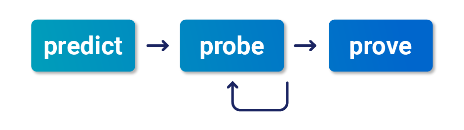
1 - Predict potential collisions
Testing every endpoint is impractical. After mapping out the target site as normal, you can reduce the number of endpoints that you need to test by asking yourself the following questions:
- Is this endpoint security critical? Many endpoints don't touch critical functionality, so they're not worth testing.
- Is there any collision potential? For a successful collision, you typically need two or more requests that trigger operations on the same record. For example, consider the following variations of a password reset implementation:
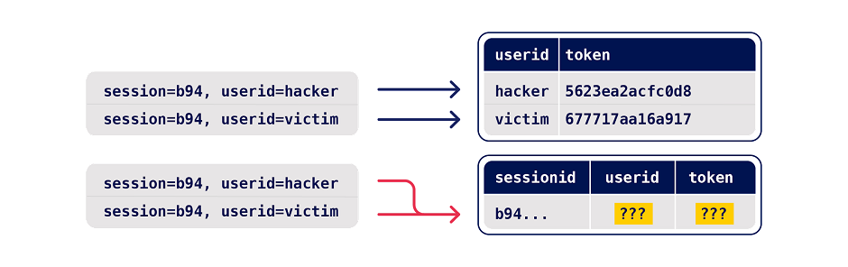
With the first example, requesting parallel password resets for two different users is unlikely to cause a collision as it results in changes to two different records. However, the second implementation enables you to edit the same record with requests for two different users.
2 - Probe for clues
To recognize clues, you first need to benchmark how the endpoint behaves under normal conditions. You can do this in Burp Repeater by grouping all of your requests and using the Send group in sequence (separate connections) option. For more information, see Sending requests in sequence.
Next, send the same group of requests at once using the single-packet attack (or last-byte sync if HTTP/2 isn't supported) to minimize network jitter. You can do this in Burp Repeater by selecting the Send group in parallel option. For more information, see Sending requests in parallel. Alternatively, you can use the Turbo Intruder extension, which is available from the BApp Store.
Anything at all can be a clue. Just look for some form of deviation from what you observed during benchmarking. This includes a change in one or more responses, but don't forget second-order effects like different email contents or a visible change in the application's behavior afterward.
Note
To test for race condition vulnerabilities quickly and easily, you can use the Trigger race conditions custom action. This sends parallel requests with a single click, removing the need to manually create and group tabs in Repeater.
For more information about how to use custom actions, see Custom actions.
3 - Prove the concept
Try to understand what's happening, remove superfluous requests, and make sure you can still replicate the effects.
Advanced race conditions can cause unusual and unique primitives, so the path to maximum impact isn't always immediately obvious. It may help to think of each race condition as a structural weakness rather than an isolated vulnerability.
PortSwigger Research
For a more detailed methodology, check out the full whitepaper: Smashing the state machine: The true potential of web race conditions
Multi-endpoint race conditions
Perhaps the most intuitive form of these race conditions are those that involve sending requests to multiple endpoints at the same time.
Think about the classic logic flaw in online stores where you add an item to your basket or cart, pay for it, then add more items to the cart before force-browsing to the order confirmation page.
Note
If you're not familiar with this exploit, check out the Insufficient workflow validation lab from our Business logic vulnerabilities topic.
A variation of this vulnerability can occur when payment validation and order confirmation are performed during the processing of a single request. The state machine for the order status might look something like this:
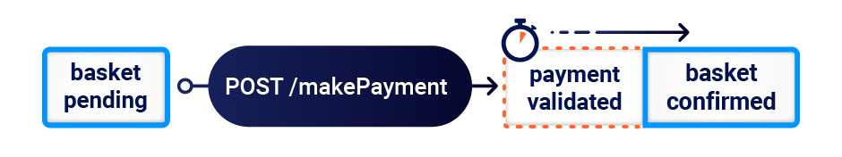
In this case, you can potentially add more items to your basket during the race window between when the payment is validated and when the order is finally confirmed.
Aligning multi-endpoint race windows
When testing for multi-endpoint race conditions, you may encounter issues trying to line up the race windows for each request, even if you send them all at exactly the same time using the single-packet technique.
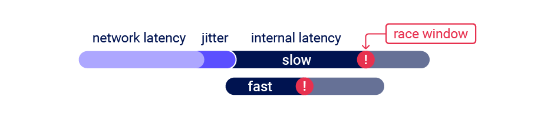
This common problem is primarily caused by the following two factors:
- Delays introduced by network architecture - For example, there may be a delay whenever the front-end server establishes a new connection to the back-end. The protocol used can also have a major impact.
- Delays introduced by endpoint-specific processing - Different endpoints inherently vary in their processing times, sometimes significantly so, depending on what operations they trigger.
Fortunately, there are potential workarounds to both of these issues.
Connection warming
Back-end connection delays don't usually interfere with race condition attacks because they typically delay parallel requests equally, so the requests stay in sync.
It's essential to be able to distinguish these delays from those caused by endpoint-specific factors. One way to do this is by "warming" the connection with one or more inconsequential requests to see if this smoothes out the remaining processing times. In Burp Repeater, you can try adding a GET request for the homepage to the start of your tab group, then using the Send group in sequence (single connection) option.
If the first request still has a longer processing time, but the rest of the requests are now processed within a short window, you can ignore the apparent delay and continue testing as normal.
If you still see inconsistent response times on a single endpoint, even when using the single-packet technique, this is an indication that the back-end delay is interfering with your attack. You may be able to work around this by using Turbo Intruder to send some connection warming requests before following up with your main attack requests.
Abusing rate or resource limits
If connection warming doesn't make any difference, there are various solutions to this problem.
Using Turbo Intruder, you can introduce a short client-side delay. However, as this involves splitting your actual attack requests across multiple TCP packets, you won't be able to use the single-packet attack technique. As a result, on high-jitter targets, the attack is unlikely to work reliably regardless of what delay you set.
Instead, you may be able to solve this problem by abusing a common security feature.
Web servers often delay the processing of requests if too many are sent too quickly. By sending a large number of dummy requests to intentionally trigger the rate or resource limit, you may be able to cause a suitable server-side delay. This makes the single-packet attack viable even when delayed execution is required.
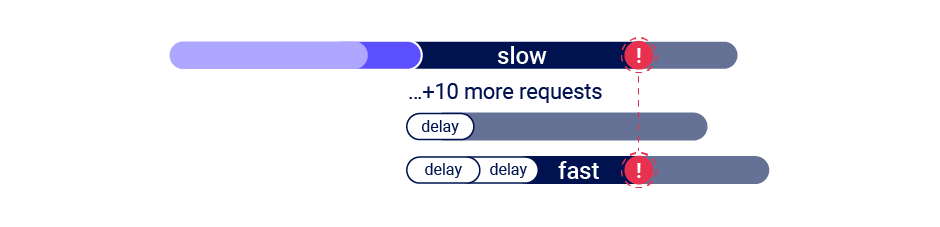
Single-endpoint race conditions
Sending parallel requests with different values to a single endpoint can sometimes trigger powerful race conditions.
Consider a password reset mechanism that stores the user ID and reset token in the user's session.
In this scenario, sending two parallel password reset requests from the same session, but with two different usernames, could potentially cause the following collision:
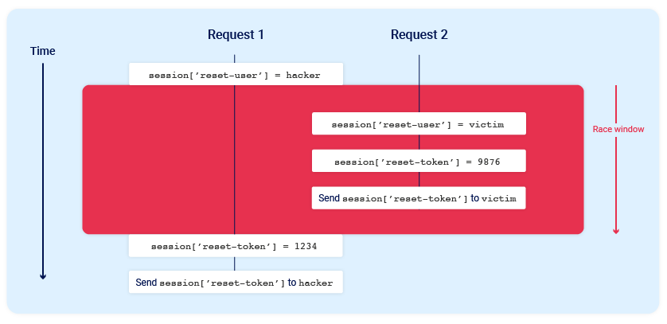
Note the final state when all operations are complete:
session['reset-user'] = victimsession['reset-token'] = 1234
The session now contains the victim's user ID, but the valid reset token is sent to the attacker.
Note
For this attack to work, the different operations performed by each process must occur in just the right order. It would likely require multiple attempts, or a bit of luck, to achieve the desired outcome.
Email address confirmations, or any email-based operations, are generally a good target for single-endpoint race conditions. Emails are often sent in a background thread after the server issues the HTTP response to the client, making race conditions more likely.
Session-based locking mechanisms
Some frameworks attempt to prevent accidental data corruption by using some form of request locking. For example, PHP's native session handler module only processes one request per session at a time.
It's extremely important to spot this kind of behavior as it can otherwise mask trivially exploitable vulnerabilities. If you notice that all of your requests are being processed sequentially, try sending each of them using a different session token.
Partial construction race conditions
Many applications create objects in multiple steps, which may introduce a temporary middle state in which the object is exploitable.
For example, when registering a new user, an application may create the user in the database and set their API key using two separate SQL statements. This leaves a tiny window in which the user exists, but their API key is uninitialized.
This kind of behavior paves the way for exploits whereby you inject an input value that returns something matching the uninitialized database value, such as an empty string, or null in JSON, and this is compared as part of a security control.
Frameworks often let you pass in arrays and other non-string data structures using non-standard syntax. For example, in PHP:
param[]=foois equivalent toparam = ['foo']param[]=foo¶m[]=baris equivalent toparam = ['foo', 'bar']param[]is equivalent toparam = []
Ruby on Rails lets you do something similar by providing a query or POST parameter with a key but no value. In other words param[key] results in the following server-side object:
params = {"param"=>{"key"=>nil}}
In the example above, this means that during the race window, you could potentially make authenticated API requests as follows:
GET /api/user/info?user=victim&api-key[]= HTTP/2
Host: vulnerable-website.com
Note
It's possible to cause similar partial construction collisions with a password rather than an API key. However, as passwords are hashed, this means you need to inject a value that makes the hash digest match the uninitialized value.
Time-sensitive attacks
Sometimes you may not find race conditions, but the techniques for delivering requests with precise timing can still reveal the presence of other vulnerabilities.
One such example is when high-resolution timestamps are used instead of cryptographically secure random strings to generate security tokens.
Consider a password reset token that is only randomized using a timestamp. In this case, it might be possible to trigger two password resets for two different users, which both use the same token. All you need to do is time the requests so that they generate the same timestamp.
How to prevent race condition vulnerabilities
When a single request can transition an application through invisible sub-states, understanding and predicting its behavior is extremely difficult. This makes defense impractical. To secure an application properly, we recommend eliminating sub-states from all sensitive endpoints by applying the following strategies:
- Avoid mixing data from different storage places.
- Ensure sensitive endpoints make state changes atomic by using the datastore's concurrency features. For example, use a single database transaction to check the payment matches the cart value and confirm the order.
- As a defense-in-depth measure, take advantage of datastore integrity and consistency features like column uniqueness constraints.
- Don't attempt to use one data storage layer to secure another. For example, sessions aren't suitable for preventing limit overrun attacks on databases.
- Ensure your session handling framework keeps sessions internally consistent. Updating session variables individually instead of in a batch might be a tempting optimization, but it's extremely dangerous. This goes for ORMs too; by hiding away concepts like transactions, they're taking on full responsibility for them.
- In some architectures, it may be appropriate to avoid server-side state entirely. Instead, you could use encryption to push the state client-side, for example, using JWTs. Note that this has its own risks, as we've covered extensively in our topic on JWT attacks.